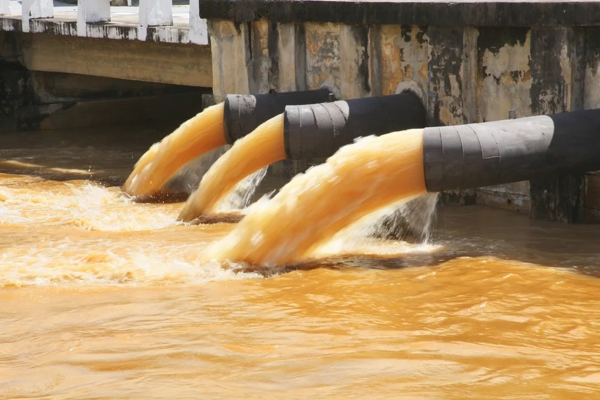

The rapid urbanization and industrial expansion in the UAE have led to a growing concern over water quality management. The increasing demand for efficient, cost-effective, and real-time water quality monitoring solutions has exposed the limitations of traditional laboratory-based testing, which is often time-consuming and expensive.

Agua Instruments Private Limited (AIPL) is at the forefront of revolutionizing water quality monitoring with advanced solutions integrating cutting-edge technologies such as the Internet of Things (IoT) and artificial intelligence (AI). Our innovative approach ensures accurate, real-time water quality assessment, aiding industries and municipalities in maintaining compliance with environmental standards and sustainable water management practices.
HUMAN ACTIVITIES AND WATER POLLUTION
Industrial processes, urban wastewater discharge, and agricultural runoff are among the primary contributors to water pollution in the UAE. The release of untreated or partially treated effluents introduces harmful substances like heavy metals, chemical pollutants, and organic matter into natural water bodies. These contaminants not only compromise water quality but also threaten aquatic ecosystems and public health.

Industries such as oil refineries, desalination plants, and manufacturing units require robust water quality monitoring systems to mitigate pollution risks. AIPL specializes in providing state-of-the-art monitoring solutions that enable businesses to detect, analyze, and control water pollution effectively, ensuring compliance with UAE's environmental regulations.
Addressing water pollution from an industrial perspective requires comprehensive solutions that prioritize pollution prevention, waste minimization, and sustainable practices. Agua Instruments specializes in providing cutting-edge solutions for monitoring and mitigating industrial water pollution. Through innovative technologies and expertise in process analytics and environmental monitoring, Agua Instruments empowers industries to adopt sustainable practices, minimize their environmental footprint, and safeguard water resources for future generations.
As water contamination continues to rise due to industrialization and urban expansion, adopting an Environmental Quality Monitoring System (EQMS) is crucial for safeguarding water resources. An EQMS provides a comprehensive framework for monitoring and managing water quality in real-time, ensuring compliance with regulatory standards and minimizing environmental impact.
- Real-Time Data Acquisition: Continuous monitoring allows for immediate detection of anomalies in water quality.
- Regulatory Compliance: Ensures industries adhere to UAE’s strict environmental laws and guidelines.
- Pollution Prevention: Identifies pollution sources early, enabling proactive intervention.
- Operational Efficiency: Optimizes industrial processes by providing accurate data for water treatment.
- Sustainability Goals: Supports businesses in reducing their environmental footprint and promoting sustainable water management.
Why Choose Agua Instruments for Water Quality Monitoring?
Advanced Technology
We leverage IoT, AI, and cloud-based analytics for real-time monitoring and predictive analysis.
Regulatory Compliance
Our solutions help industries meet UAE’s strict environmental and water safety standards.
Customizable Solutions
Tailored monitoring systems designed to meet specific industrial and municipal requirements.
Reliable & Cost-Effective
High-precision instruments with minimal maintenance and operational costs.
Expert Support & Training
Comprehensive customer support, including training sessions and consultation services.

Ensuring potable water meets regulatory standards through continuous monitoring of essential parameters.

Helping industries comply with environmental laws by monitoring effluent quality.

Assessing salinity and purity to optimize desalination processes.

Monitoring wastewater discharge to prevent contamination of marine ecosystems.

Tracking nutrient levels and water quality to enhance crop yield and reduce water waste.

Maintaining optimal water conditions for sustainable fish farming.

Ensuring safe and hygienic water conditions in hotels, resorts, and recreational facilities.

Supporting universities and research institutions with reliable water analysis equipment.
Water quality monitoring involves analyzing various physical, chemical, and biological parameters to determine the condition of water resources. At AIPL, we offer comprehensive monitoring solutions that assess key parameters, including:
- pH Levels: Determines water acidity or alkalinity, crucial for industrial and municipal water treatment.
- Turbidity: Measures the clarity of water, essential for drinking water safety.
- Dissolved Oxygen (DO): Indicates water's ability to support aquatic life.
- Total Dissolved Solids (TDS): Helps in evaluating water salinity and suitability for different applications.
- Chemical Oxygen Demand (COD) & Biochemical Oxygen Demand (BOD): Critical for wastewater treatment and pollution control.
- Heavy Metals (Lead, Arsenic, Mercury, etc.): Monitored to prevent contamination in drinking water and industrial discharge.
With our advanced analytical instruments, industries and municipalities in the UAE can achieve high-precision monitoring for sustainable water resource management.
With Agua Instruments, businesses and municipalities in the UAE can enhance water quality monitoring, ensure regulatory compliance, and contribute to sustainable water management.